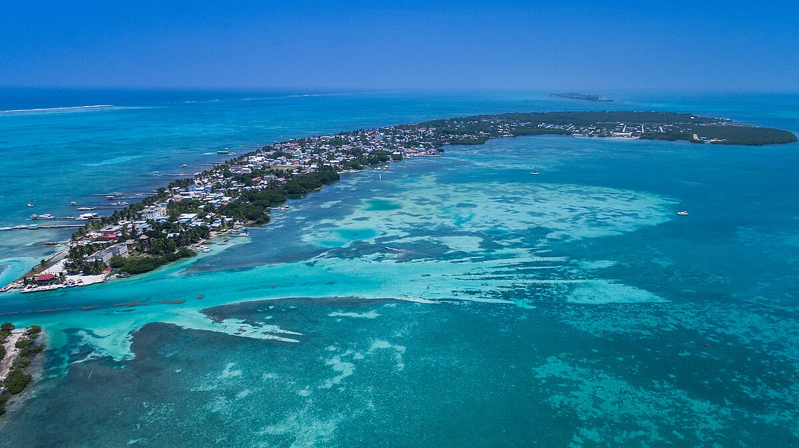
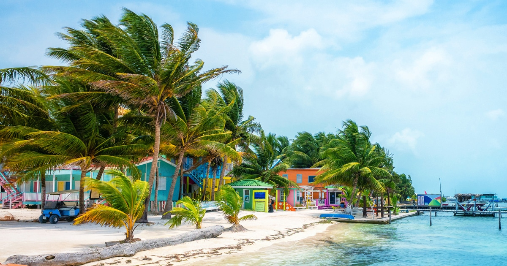

Caye Caulker is a small Caribbean island off the coast of Belize. It’s divided by a narrow channel called The Split, where there’s a bar and a sandy beach. To the south is the island’s only settlement, known as Caye Caulker Village. The north of the island is home to dense mangrove forest and diverse birdlife, protected by a forest reserve. The Caye Caulker Marine Reserve has dive sites on the Belize Barrier Reef.
 